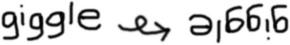

| Title text: | |||
| Value: | (up to 13 digits) | ||
| Supplement: | (two or five digits only) | ||
| Format: | |||
| Short height: | |||
Fill in the "value" above with a 7-, 8-, 12- or 13-digit number for a barcode, y'know, like the ones you see on food, books, and other retail items. If you want to have the server generate a checksum for you, then just replace the last digit with a question mark ("?"). The "format" field lets you explicitly pick the barcode format, but if you leave it on "smart" it will generally pick something that will work. And if you want a supplemental code (often used to indicate the price of something), fill out the "supplement" field.
Please note: The barcodes that you can generate here must consist only of digits (no letters or punctuation).
This toy was inspired by the October 2, 1994 edition of You Can With Beakman and Jax (a newspaper comic), which featured an excellent description of how UPC barcodes work. Running near-continuously since that fateful day in the fall of 1994, this was the first barcode generating site on the web, and was also one of the first public websites (if not the first such website) to serve instantly-generated images. At first, the server only did the original UPC-A form (the most common product barcode type in the USA at the time), but in the spring of 2001, improvements were made such that the server could produce pretty much any commonly-used UPC or EAN barcode.
Things took a turn for the worse sometime around 2010, when "XBM" (the image format produced by the server) stopped being supported by most web browsers. At that point, the server continued to work — sorta — except that it wasn't really easy to actually see what it was producing. Then, in 2023, the whole website was moved to a new system which didn't support "CGI" (the very basic web application framework that the Barcode Server used), and that totally broke it.
Finally, again in 2023, the entire codebase of the server was revamped, such that it once again operates… and even better that it did in the first place! Instead of being a back-end server written in C and glued together with shell scripts, it is now a front-end browser application. So, perhaps technically it is no longer really a "server" so much as a fancy web page.
Sometimes people end up here because they're trying to find out how to get a UPC code assigned for a product they wish to sell. In the USA, at least, the Uniform Code Council does that. Once you have a number for your product, feel free to come back here to look at the barcode associated with that number, and save it, or print it, or what have you.
The previous paragraph isn't enough for some people. Here is a more detailed explanation.
One thing that people like to ask a lot is what the "meaning" is of the little marks to the left and right and smack dab in the middle of the code. On either side is a pair of thin dark bars separated by a thin light bar, and in the middle, there's always the pattern light-dark-light-dark-light. These are not in fact representations of a digit, but are rather merely synchronization marks (sometimes called "guard bars") that help barcode-reading equipment recognize that it is in fact looking at a barcode and help it determine the width of a mark (since barcodes come in different sizes and the distance of the code from the equipment optics can affect the readings as well). On the right-hand-side of a barcode (but not on the left), the digit "6" is represented by something that does bear a resemblence to the synch marks, and this has occasionally led "antichrist hunters" to exclaim that all barcodes contain embedded within them "the number of the beast" (that is, "666").
| Edge Synch Mark |
Middle Synch Mark |
Right Digit 6 | Left Digit 6 | ||||||||||||||||||||||
|
|
|
|
That claim holds about as much water as saying the word "giggle" has the mark of the beast because it looks like it has three "6"s in it if you turn it upside down (if you draw your "g"s like upside down "6"s).
|  |
But just to re-fog things back up a bit: While the particular choice for synch marks makes a lot of sense from an engineering standpoint, there's no obvious reason that the particular representation for the digit "6" was chosen, and it is conceivably possible — but arguably extremely unlikely — that someone, some group of people, or even some sinister force (such as one of the devil's minions looking to get a big bonus that month) influenced the standards process so as to make the representation for "6" look as much like the synch marks as possible. But that doesn't change the fact that the synch marks themselves are not in fact representations of actual numerical quantities. Of course, if you care about this for anything more than cocktail party conversation, you should consult with your personal religious authority for the final word on the matter.
Enjoy!
|
Copyright 1994-2023 the Barcode Server Authors (Dan Bornstein et alia). SPDX-License-Identifier: Apache-2.0 |
milk.com / barcode |